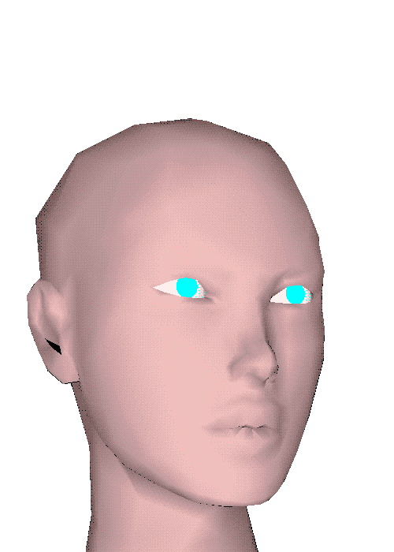

SynthWave
Synthwave is a primarily 1980's subgenre of Vaporwave, sometimes known as Outrun. This style can be recognized from it's iconic use of lasers, grids, neon colors, and popular 1980's cars.
